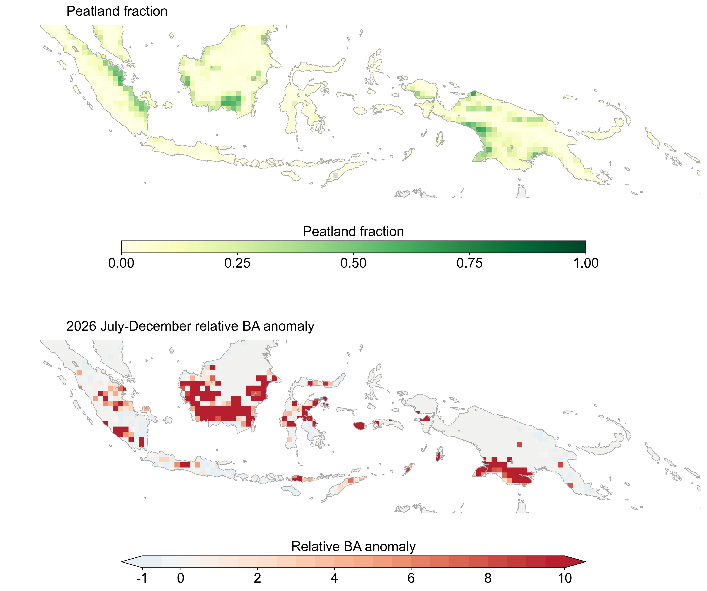
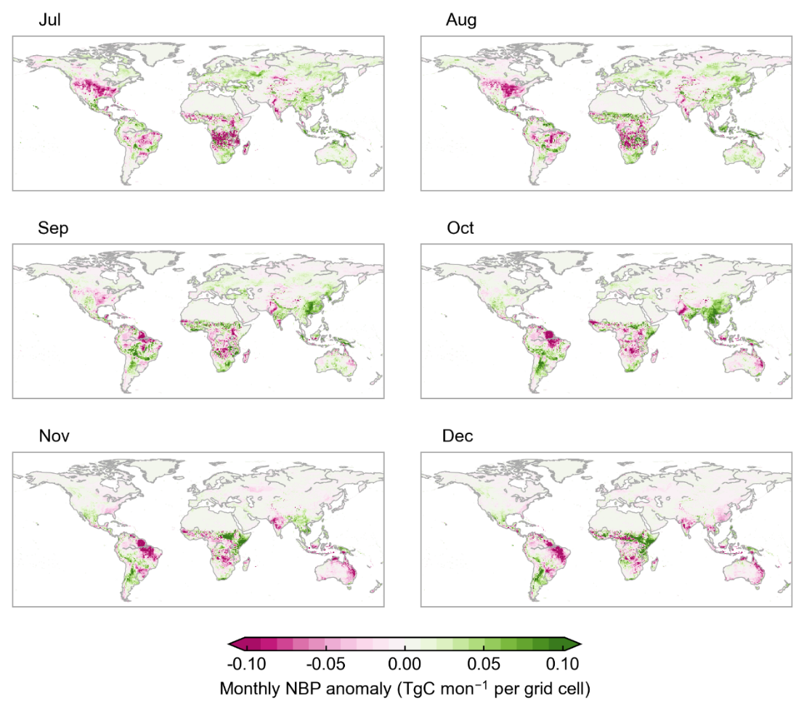

Research projections for July–December 2026. Panel letters have been removed for web presentation; units, scales and legends are retained. Complete web figures remain available.
Where land carbon sinks may weaken
Cumulative NBP anomaly · July–December 2026 · kg C m−2
The global carbon balance
Monthly evolution and July–December cumulative NBP anomaly, compared with earlier El Niño events.
What contributes to the change?
Fire risks in equatorial Asia
Relative burned-area anomaly = (BA − reference BA) / reference BA. An anomaly of 1 means twice the reference burned area.
Peatland exposure
About 12.18 million hectares of tropical forested peatlands overlap elevated fire risk. The mapped area describes exposure, not hectares predicted to burn.

The carbon-sink outlook, month by month
The spatial pattern shifts through the forecast period. View the monthly sequence to see regional timing.

Anomalies use the study’s reference period. Sign agreement is not a calibrated impact probability. Read the interpretation guide.